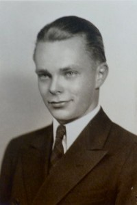
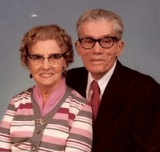

Arne Christianson
M, #24801, f. omtrent 1916
Foreldre
Familie: Olga M. Lerud (f. omtrent 1917)
| Sønn | James Christianson (f. etter 1938) |
| Datter | Caryle Christianson (f. etter 1938) |
| Datter | Karen Christianson (f. etter 1938) |
| Sønn | David Paul Christianson (f. 20 desember 1941) |
Biografi
Arne Christianson ble født omtrent 1916 på/i South Dakota, USA. Han giftet seg med Olga M. Lerud på/i USA.
Arne Christianson had reference number 2918.
| Sist redigert |
10 januar 2014 00:00:00 |
| Slektskap | 5-menning 3 ganger forskjøvet til Håkon Wahl |
Lars Christianson
M, #24802, f. 6 juli 1920, d. 12 april 1988
Foreldre

Lars Christianson
Biografi
Lars Christianson ble født den 6 juli 1920 på/i Sioux Falls, Minnehaha County, South Dakota, USA. Han døde den 12 april 1988 på/i Janesville, Rock County, Wisconsin, USA. Han ble gravlagt på/i Palmyra Lutheran Cemetery, Hector, Renville County, Minnesota, USA.
Lars Christianson had reference number 2919.
| Sist redigert |
1 april 2025 22:23:53 |
| Slektskap | 5-menning 3 ganger forskjøvet til Håkon Wahl |
Henry Kordsmyre
M, #24803, f. omtrent 1877
| Datter | Margareth Kordsmyre (f. etter 1914) |
Biografi
Henry Kordsmyre had reference number 2920. Han drev blomsterforretning Olivia, Renville County, Minnesota, USA.
| Sist redigert |
7 mars 2025 10:59:19 |
Andreas Olsen Hohle
M, #24810, f. 29 november 1857, d. 1887
Biografi
Andreas Olsen Hohle ble født den 29 november 1857 på/i Lesja, Oppland. Han giftet seg med
Hannah Josephia Christianson i 1882 på/i USA. Han døde i 1887 på/i Minnesota, USA.
Andreas Olsen Hohle had reference number 2927.
| Sist redigert |
14 april 2025 22:11:22 |
Martin G. Loftness
M, #24811, f. 25 mai 1865, d. 17 mars 1960
Biografi
Martin G. Loftness ble født den 25 mai 1865 på/i Nordfjord. Han giftet seg med
Hannah Josephia Christianson i 1891 på/i USA. Han døde den 17 mars 1960 på/i Renville County, Minnesota, USA. Han ble gravlagt på/i Palmyra Lutheran Cemetery, Hector, Renville County, Minnesota, USA.
Martin G. Loftness had reference number 2928.
| Sist redigert |
7 mars 2025 10:59:19 |
Ola Arnold Hohle
M, #24812, f. 24 august 1883, d. 12 februar 1964
Foreldre
Biografi
Ola Arnold Hohle ble født den 24 august 1883 på/i USA. Han giftet seg med
Grace Maud Loftus på/i USA. Han døde den 12 februar 1964 på/i Hennepin County, Minnesota, USA.
Ola Arnold Hohle had reference number 2929.
| Sist redigert |
4 mars 2025 12:29:56 |
| Slektskap | 5-menning 3 ganger forskjøvet til Håkon Wahl |
Antone Thorlach Hohle
M, #24813, f. 3 mars 1885, d. 16 april 1919
Foreldre
Familie: Anna M. Bell (f. juni 1886, d. 19 februar 1973)
| Datter | Vera Hohle+ (f. 10 juli 1911, d. 29 januar 2002) |
Biografi
Antone Thorlach Hohle ble født den 3 mars 1885 på/i Minnesota, USA. Han giftet seg med
Anna M. Bell på/i USA. Han døde den 16 april 1919 på/i St. Paul, Ramsey County, Minnesota, USA. Han ble gravlagt på/i Lakewood Cemetery, Minneapolis, Hennepin County, Minnesota, USA.
Antone Thorlach Hohle had reference number 2930.
| Sist redigert |
14 april 2025 22:05:56 |
| Slektskap | 5-menning 3 ganger forskjøvet til Håkon Wahl |
Albert Henry Hohle
M, #24814, f. 10 juli 1887, d. 15 september 1975
Foreldre
Biografi
Albert Henry Hohle ble født den 10 juli 1887 på/i Franklin, Renville County, Minnesota, USA. Han giftet seg med
Olga Nestande på/i USA. Han døde den 15 september 1975 på/i Franklin, Renville County, Minnesota, USA. Han ble gravlagt på/i Fort Ridgely and Dale Evangelical Lutheran Cemetery, Fairfax, Renville County, Minnesota, USA.
Albert Henry Hohle had reference number 2931. Han bodde på/i Franklin, Renville County, Minnesota, USA.
| Sist redigert |
14 april 2025 22:12:59 |
| Slektskap | 5-menning 3 ganger forskjøvet til Håkon Wahl |
Gregor Milton Loftness
M, #24815, f. 16 januar 1892, d. 20 oktober 1915
Foreldre
Biografi
Gregor Milton Loftness ble født den 16 januar 1892 på/i Renville County, Minnesota, USA. Han døde in a runaway horse accident den 20 oktober 1915 på/i Renville County, Minnesota, USA. Han ble gravlagt på/i Palmyra Lutheran Cemetery, Hector, Renville County, Minnesota, USA.
Gregor Milton Loftness had reference number 2932.
| Sist redigert |
7 mars 2025 10:59:19 |
| Slektskap | 5-menning 3 ganger forskjøvet til Håkon Wahl |
Joseph Conrad Loftness
M, #24816, f. 27 oktober 1893, d. 17 oktober 1918
Foreldre
Biografi
Joseph Conrad Loftness ble født den 27 oktober 1893 på/i Renville County, Minnesota, USA. Han døde av lungebetennelse den 17 oktober 1918 på/i Frankrike. Han ble gravlagt i 1918 på/i Palmyra Cemetery, Hector, Renville County, Minnesota, USA.
Joseph Conrad Loftness had reference number 2933.
| Sist redigert |
7 mars 2025 10:59:19 |
| Slektskap | 5-menning 3 ganger forskjøvet til Håkon Wahl |
Hilda Margaret Loftness
K, #24817, f. 16 februar 1895, d. 1 august 1997
Foreldre

Hilda og Anton Ytterboe
Biografi
Hilda Margaret Loftness ble født den 16 februar 1895 på/i Renville County, Minnesota, USA. Hun giftet seg med
Anton Ytterboe i 1926 på/i USA. Hun døde den 1 august 1997 på/i Litchfield, Meeker County, Minnesota, USA. Hun ble gravlagt på/i Palmyra Lutheran Cemetery, Hector, Renville County, Minnesota, USA.
Hilda Margaret Loftness was also known as Hilda Margaret Loftness Ytterboe. Hun had reference number 2934.
| Sist redigert |
25 mai 2025 22:50:27 |
| Slektskap | 5-menning 3 ganger forskjøvet til Håkon Wahl |
Johanna Mathilda Loftness
K, #24818, f. 2 juni 1898, d. 1 august 1988
Foreldre
Biografi
Johanna Mathilda Loftness ble født den 2 juni 1898 på/i Renville County, Minnesota, USA. Hun giftet seg med
Harvey Edwin Rodmyre på/i USA. Hun døde den 1 august 1988 på/i Hector, Renville County, Minnesota, USA. Hun ble gravlagt på/i Palmyra Lutheran Cemetery, Hector, Renville County, Minnesota, USA.
Johanna Mathilda Loftness was also known as Jane Loftness. Hun was also known as Johanna Mathilda Rodmyre. Hun had reference number 2935. Hun var utdannet på/i Augustana College, Sioux Falls, S.D.
| Sist redigert |
7 mars 2025 10:59:19 |
| Slektskap | 5-menning 3 ganger forskjøvet til Håkon Wahl |
Thora Viola Loftness
K, #24819, f. 1 august 1900, d. 1969
Foreldre
Biografi
Thora Viola Loftness ble født den 1 august 1900 på/i Renville County, Minnesota, USA. Hun giftet seg med
William Johnson på/i USA. Hun døde i 1969 på/i USA.
Thora Viola Loftness was also known as Thora Viola Johnson. Hun had reference number 2936.
| Sist redigert |
7 mars 2025 10:59:19 |
| Slektskap | 5-menning 3 ganger forskjøvet til Håkon Wahl |
Palmer Amberg Neuman Loftness
M, #24820, f. 3 april 1905, d. 1989
Foreldre
Familie: Harriet A. Lundstrøm (f. 2 september 1910, d. 2 april 2004)
| Sønn | Richard Arlin Loftness+ (f. 9 juli 1933) |
| Sønn | Lawrence Daniel Loftness+ (f. 29 april 1937) |
| Sønn | Bruce Dale Loftness+ (f. 19 oktober 1940) |
| Datter | Corinne Ann Loftness+ (f. 27 april 1943) |
| Sønn | David Palmer Loftness+ (f. 1945) |
| Datter | Louise Diane Loftness+ (f. 27 mai 1951) |
Biografi
Palmer Amberg Neuman Loftness ble født den 3 april 1905 på/i USA. Han giftet seg med
Harriet A. Lundstrøm på/i USA. Han døde i 1989 på/i Hector, Renville County, Minnesota, USA. Han ble gravlagt på/i Swedlanda Lutheran Church Cemetery, Hector, Renville County, Minnesota, USA.
Palmer Amberg Neuman Loftness had reference number 2937.
| Sist redigert |
7 mars 2025 10:59:19 |
| Slektskap | 5-menning 3 ganger forskjøvet til Håkon Wahl |
Grace Maud Loftus
K, #24821, f. 1891, d. 1970
Biografi
Grace Maud Loftus ble født i 1891 på/i Minnesota, USA. Hun giftet seg med
Ola Arnold Hohle på/i USA. Hun døde i 1970 på/i Minnesota, USA.
Grace Maud Loftus was also known as Grace Maud Hohle. Hun had reference number 2938. Hun bodde på/i Ramsey County, Minnesota, USA. Hun bodde på/i Minneapolis, Hennepin County, Minnesota, USA.
| Sist redigert |
28 mars 2025 13:00:29 |
Dorothy Eleanor Hohle
K, #24822, f. omtrent 1915
Foreldre
| Datter | Pamela Rae Johnson (f. 23 mai 1946) |
| Datter | Melanie Grace Johnson (f. 23 februar 1948) |
| Sønn | Reid Arnold Johnson (f. 2 april 1952, d. 6 august 2001) |
Biografi
Dorothy Eleanor Hohle ble født omtrent 1915 på/i Minnesota, USA. Hun giftet seg med
Raymond Walter Johnson på/i USA.
Dorothy Eleanor Hohle was also known as Dorothy Eleanor Johnson. Hun had reference number 2939.
| Sist redigert |
10 januar 2014 00:00:00 |
| Slektskap | 6-menning 2 ganger forskjøvet til Håkon Wahl |
William G Hohle
M, #24823, f. mellom 1917 og 1918, d. 17 januar 1997
Foreldre
Familie: Wilma Lois Merriot (f. 20 februar 1919, d. 20 mai 2006)
| Sønn | Bradford Hohle (f. etter 1940) |
Biografi
William G Hohle ble født mellom 1917 og 1918 på/i St. Paul, Ramsey County, Minnesota, USA. Han giftet seg med
Wilma Lois Merriot på/i USA. Han døde den 17 januar 1997 på/i McCaysville, Fannin, Georgia, USA.
William G Hohle had reference number 2940. Han bodde på/i Fairmont, Minnesota, USA.
| Sist redigert |
28 mars 2025 13:00:29 |
| Slektskap | 6-menning 2 ganger forskjøvet til Håkon Wahl |
Raymond Walter Johnson
M, #24824, f. omtrent 1906
| Datter | Pamela Rae Johnson (f. 23 mai 1946) |
| Datter | Melanie Grace Johnson (f. 23 februar 1948) |
| Sønn | Reid Arnold Johnson (f. 2 april 1952, d. 6 august 2001) |
Biografi
Raymond Walter Johnson ble født omtrent 1906 på/i Minnesota, USA. Han giftet seg med
Dorothy Eleanor Hohle på/i USA.
Raymond Walter Johnson had reference number 2941.
| Sist redigert |
28 august 2024 22:02:13 |
{kind=link}
{kind=link}